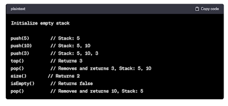
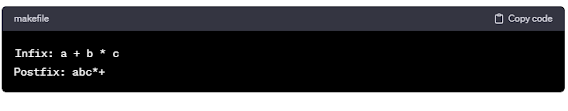

adalah struktur data yang mengikuti prinsip Last In, First Out (LIFO). Artinya, elemen terakhir yang dimasukkan ke dalam stack adalah elemen pertama yang diambil atau dikeluarkan dari stack. Operasi penambahan elemen pada stack disebut "push," dan operasi pengambilan elemen dari stack disebut "pop."
Berikut adalah beberapa konsep dasar terkait stack:
Definisi: Menambahkan elemen ke atas (atau akhir) stack.
Operasi: push(item)
Definisi: Elemen teratas dari stack, yang paling baru ditambahkan atau yang akan diambil selanjutnya.
Operasi: top()
Definisi: Jumlah elemen yang saat ini ada dalam stack.
Operasi: size()
Operasi: isEmpty()
Stack dapat diimplementasikan menggunakan struktur data dasar seperti array atau linked list. Dalam konteks pemrograman, stack sering digunakan untuk melacak pemanggilan fungsi (call stack), ekspresi matematika (evaluasi ekspresi), manajemen memori, dan berbagai aplikasi lain yang memerlukan prinsip LIFO.
Dalam contoh ini, elemen-elemen ditambahkan ke stack menggunakan operasi push, diambil menggunakan operasi pop, dan informasi tentang elemen teratas dapat dilihat menggunakan operasi top. Operasi lain seperti size dan isEmpty membantu dalam manajemen stack.
Karakteristik utama dari struktur data stack melibatkan sifat Last In, First Out (LIFO) yang mendasarinya. Berikut adalah beberapa karakteristik kunci dari stack:
Elemen terakhir yang ditambahkan ke dalam stack adalah elemen pertama yang diambil atau dikeluarkan. Ini menciptakan urutan operasi yang sebaliknya dari konsep antrian.
Operasi push digunakan untuk menambahkan elemen baru ke dalam stack. Elemen ini akan diletakkan di atas elemen teratas yang sudah ada.
Operasi pop digunakan untuk mengambil (menghapus) elemen teratas dari stack. Elemen ini adalah yang terakhir ditambahkan dan paling atas dalam struktur stack.
Elemen teratas adalah elemen yang paling baru ditambahkan ke dalam stack atau elemen yang akan diambil selanjutnya. Operasi top digunakan untuk melihat elemen teratas tanpa menghapusnya.
Ukuran stack adalah jumlah elemen yang ada di dalamnya. Operasi size memberikan informasi tentang jumlah elemen dalam stack.
Operasi isEmpty digunakan untuk memeriksa apakah stack kosong atau tidak. Jika stack kosong, operasi ini mengembalikan nilai true; jika tidak, mengembalikan nilai false.
Stack dapat diimplementasikan menggunakan struktur data dasar seperti array atau linked list. Dalam implementasi array, sebuah indeks dapat digunakan untuk menunjukkan elemen teratas. Dalam implementasi linked list, operasi push dan pop dapat dilakukan dengan menyesuaikan pointer teratas stack.
Stack digunakan untuk melacak pemanggilan fungsi dalam pemrograman. Setiap kali fungsi dipanggil, informasi tentang fungsi tersebut disimpan di stack, dan ketika fungsi selesai dieksekusi, informasi tersebut dihapus dari stack.
Stack digunakan untuk manajemen memori dalam beberapa sistem. Variabel lokal dan informasi pengembalian fungsi disimpan dalam stack.
Operasi push, pop, top, size, dan isEmpty dalam stack biasanya memiliki kompleksitas waktu konstan, yaitu O(1). Artinya, waktu yang dibutuhkan untuk melakukan operasi tidak bergantung pada ukuran stack.
Pemahaman karakteristik ini membantu dalam merancang dan menggunakan stack secara efektif dalam pengembangan perangkat lunak.
Dalam konteks struktur data stack, kondisi stack merujuk pada situasi atau status terkini dari stack tersebut. Beberapa kondisi umum dalam stack melibatkan apakah stack kosong atau penuh, dan beberapa operasi yang dapat dilakukan pada stack.
Kondisi ini terjadi ketika tidak ada elemen yang ada dalam stack. Pada umumnya, kondisi ini diamati saat inisialisasi stack atau setelah semua elemen diambil dari stack.
Cara memeriksa: Menggunakan operasi isEmpty().
Jika stack diimplementasikan dengan ukuran yang terbatas (misalnya, array dengan ukuran tetap), kondisi ini terjadi ketika stack telah mencapai kapasitas maksimalnya.
Cara memeriksa: Melibatkan pemeriksaan ukuran stack dan batas kapasitas.
Kondisi ini mencakup informasi tentang elemen teratas stack, yaitu elemen yang paling baru ditambahkan atau yang akan diambil selanjutnya.
Cara memeriksa: Menggunakan operasi top() untuk melihat elemen teratas.
Kondisi ini memberikan informasi tentang jumlah elemen yang ada dalam stack pada saat tertentu.
Cara memeriksa: Menggunakan operasi size() untuk mendapatkan ukuran stack.
Setelah operasi push, stack akan memiliki elemen baru di atasnya.
Setelah operasi pop, stack akan kehilangan elemen teratasnya.
Cara memeriksa: Melibatkan pemeriksaan hasil dari operasi push atau pop, serta melihat kondisi terkini menggunakan operasi lainnya.
Kondisi stack juga dapat mencakup jenis operasi yang dapat atau tidak dapat dilakukan pada stack, tergantung pada situasi tertentu.
Contoh: Pada stack yang terbatas, jika stack penuh, operasi push tidak dapat dilakukan.
Kondisi keseluruhan stack mencakup informasi tentang beberapa faktor sekaligus, seperti apakah stack kosong, berapa ukuran stack, dan elemen teratasnya.
Cara memeriksa: Melibatkan pengamatan kombinasi kondisi menggunakan operasi-operasi yang sesuai.
Memahami kondisi stack penting untuk mengelola stack dengan efisien dan mencegah kesalahan seperti underflow (mengambil dari stack kosong) atau overflow (menambahkan ke stack penuh).
Stack memiliki berbagai aplikasi dalam dunia pemrograman dan algoritma. Berikut adalah beberapa penggunaan umum dari stack:
Stack digunakan untuk melacak pemanggilan fungsi dalam suatu program. Setiap kali sebuah fungsi dipanggil, informasi tentang fungsi tersebut, seperti alamat kembalinya dan variabel lokalnya, disimpan di dalam stack. Ketika fungsi selesai dieksekusi, informasi tersebut dihapus dari stack.
Stack sering digunakan untuk evaluasi ekspresi matematika dalam notasi postfix atau postfix. Dalam pendekatan ini, operator-operator dan operand-operand disusun dalam urutan postfix, dan stack digunakan untuk melacak nilai-nilai sementara selama evaluasi ekspresi.
Stack dapat digunakan untuk memeriksa keseimbangan dan ketertutupan tanda kurung, kurawal, dan kurung siku dalam suatu teks. Setiap kali tanda buka muncul, itu ditambahkan ke dalam stack, dan ketika tanda tutup muncul, tanda buka yang sesuai dihapus dari stack. Jika stack kosong pada akhir, maka tanda kurung seimbang.
Stack dapat digunakan untuk mendukung mekanisme "undo" dalam aplikasi pengeditan teks atau grafis. Setiap aksi yang dapat dibatalkan disimpan dalam stack, dan operasi "undo" mengambil aksi terakhir dari stack
Dalam beberapa sistem operasi, stack digunakan untuk menyimpan variabel lokal dan informasi pemanggilan fungsi. Stack memungkinkan alokasi dan dealokasi memori yang efisien untuk variabel lokal dan informasi pemanggilan fungsi.
Dalam algoritma pemecahan masalah, stack dapat digunakan untuk melacak jalur yang telah diambil selama pencarian atau traversing struktur data seperti graf.
Stack dapat digunakan dalam algoritma backtracking untuk mencoba semua kemungkinan solusi dalam suatu masalah dan mem-backtrack jika solusi yang sedang diuji tidak memenuhi kriteria.
Pemanggilan fungsi rekursif juga dapat diimplementasikan menggunakan stack. Setiap panggilan fungsi rekursif menambahkan informasi ke dalam stack, dan ketika panggilan rekursif selesai, informasi itu dihapus dari stack.
Saat mencari jalur melalui labirin, stack dapat digunakan untuk melacak jalur yang telah diambil, sehingga jika mencapai buntu, kita dapat kembali ke keputusan sebelumnya dan mencoba jalur alternatif.
DFS pada graf dapat diimplementasikan menggunakan stack. Stack digunakan untuk melacak node yang akan dieksplorasi selanjutnya.
Penggunaan stack tidak terbatas pada daftar di atas; struktur data ini dapat menjadi alat yang sangat berguna dalam banyak konteks pemrograman dan algoritma.
Notasi infix dan postfix adalah dua cara berbeda untuk mengekspresikan ekspresi matematika.
Definisi: Notasi infix adalah cara konvensional untuk mengekspresikan ekspresi matematika di mana operator ditempatkan di antara operand-operand.
Contoh: Ekspresi infix umumnya ditulis sebagai a + b * c, di mana operator + berada di antara operand a dan hasil perkalian b * c.
Sifat: Notasi infix mengikuti aturan konvensional matematika dan memerlukan penggunaan tanda kurung untuk menentukan urutan operasi yang benar.
Definisi: Notasi postfix (juga dikenal sebagai notasi posfiks atau notasi terbalik) adalah cara alternatif untuk mengekspresikan ekspresi matematika di mana operator ditempatkan setelah operand-operand.
Contoh: Ekspresi postfix yang setara dengan contoh infix di atas adalah a b c * +.
Sifat: Notasi postfix memiliki keunggulan bahwa tidak memerlukan penggunaan tanda kurung atau kejelasan urutan operasi, karena urutannya sudah diimplikasikan oleh posisi operator.
Proses konversi ekspresi dari notasi infix ke postfix melibatkan penggunaan stack untuk menyusun ekspresi baru. Beberapa langkah umumnya termasuk:
Membaca simbol demi simbol dari kiri ke kanan.
Jika simbol adalah operand, langsung tambahkan ke ekspresi postfix.
Jika simbol adalah operator, dorong ke stack dengan beberapa aturan prioritas operator
Jika simbol adalah tanda kurung, tambahkan atau keluarkan operator dari stack hingga tanda kurung seimbang.
Setelah semua simbol dibaca, keluarkan operator yang tersisa dari stack.
Contoh konversi infix ke postfix:
Infix: a + b * c
Postfix: a b c * +
Transformasi dari notasi infix ke postfix melibatkan sejumlah aturan dan strategi. Berikut adalah aturan-aturan umum yang diterapkan selama proses transformasi infix ke postfix:
Operator-operator memiliki prioritas yang berbeda. Operator dengan prioritas lebih tinggi akan ditempatkan lebih dekat dengan operand dalam notasi postfix.
Contoh: Dalam ekspresi a + b * c, operator * memiliki prioritas lebih tinggi daripada +, sehingga dalam postfix, b dan c akan lebih dekat dengan * daripada dengan +.
Tanda kurung digunakan untuk menentukan urutan operasi. Operasi di dalam tanda kurung dievaluasi lebih dahulu.Selama konversi, tanda kurung dapat mempengaruhi penempatan operator dalam postfix.
Asosiativitas operator menentukan arah evaluasi ketika ada dua atau lebih operator dengan prioritas yang sama.
Operator matematika umumnya bersifat kiri-ke-kanan, artinya jika dua operator memiliki prioritas yang sama, yang muncul lebih awal dalam ekspresi infix akan ditempatkan lebih dekat dengan operand dalam postfix.
Jika tanda kurung membungkus operasi yang memiliki prioritas lebih tinggi daripada operasi di luar tanda kurung, maka operasi dalam tanda kurung akan dievaluasi lebih dahulu.
Urutan operand tetap sama dalam ekspresi infix dan postfix, hanya urutan operator yang dapat berubah.
Saat menemui tanda kurung buka, dorong ke dalam stack.
Saat menemui tanda kurung tutup, keluarkan operator dari stack hingga tanda kurung buka, dan tambahkan ke postfix.
Saat menemui operator, keluarkan operator dari stack hingga operator pada stack memiliki prioritas lebih rendah daripada atau sama dengan operator saat ini, atau stack kosong.
Setelah itu, dorong operator saat ini ke stack.
Saat menemui operand, tambahkan ke ekspresi postfix.
Proses transformasi infix ke postfix menggunakan stack untuk melacak operator dan operand. Aturan-aturan di atas membantu dalam menentukan urutan penempatan operator dan operand dalam ekspresi postfix sehingga dapat memberikan hasil yang benar.